ImageMagick Examples --
 Drawing
Drawing
Index
Drawing in IM is the way to add new elements to an existing image. While
a lot of text drawing is covered in the examples page for Compound Font Effects, and in Image
Annotating, this page deals with the other more general aspects of the
"
The '
The '
You may also like to look at Push/Pop Context for
an example on how you can create a rotated ellipse.
A better method of drawing lines and curves is to use the SVG Path Drawing, which can be much more versatile and even allows for
'relative line drawing'.
These last two fill type operations are currently the only draw operations
that are affected by "
If I move one of the control points, so that it is NOT 'reflected' though the
attached 'knot' from the other control point of the same 'knot', then the
curve will be dis-continuous.
If the control point is moved again so that it matches the related 'knot'
point the line will come directly from that point without any 'curve' at all.
If both control points are set to the their respective 'knots', then a
straight line will be generated.
The '
It is not recommended that you use more or less than 4 points per
'
However when drawing transparent and semi-transparent colors, these functions
are not the same.
Here we have a three pixel red image (enlarged), the second or middle pixel we
used the '
All the '
However as you can see in the first result, some pixels along the edges did
not get replaced. These pixels are not exactly the same color as the
pixel selected, so they were ignored. Adding a small fuzz factor will also include colors that
are similar to the original color. As shown the second example above.
Of course a 'fuzz factor' is not a great solution, as it will not capture all
such edge pixels. This is a recurring problem with all these 'color fill'
methods, and one that has no general solution.
If you want to replace a specific known color, rather than select a color from
the image itself, then the "
Flood-filling areas with a color is not without its problems. The color can
leak across a thin boundary, into areas where it was not wanted, (see GIFs on a background pattern as a
demonstration of this). Or it may not fill the area selected right to the
edge, (see Anti-Aliasing and Flood Fill
Problems). But it does work.
The '
The final draw color method is '
This is actually very useful in that it gives one simple way of generating a
plain solid color (or tiled image) canvas from an existing image. (See Canvases Sized to an Existing Image) for this and
other ways of doing the same thing.
FUTURE: Using a "
The '
Notice that the '
Look at the edges of the circle, they don't actually look really very
smooth. You can see significant staircase effects.
That is because you drew the circle in linear RGB colorspace. But you then
saved the image as if it was really sRGB colorspace!
Now the circle edges actually looks smooth and rounded just like they should
be.
If you want to do this properly, we really should be making the correction
using colorspace. However as IM assumes RGB is the default colorspace for
saving you need do some tricky handling to get it to do things correctly.
To correctly draw (or do any 'linear' image processing) using a real image (in
IMv6) you need to first remove any existing gamma, process the image, then
restore that gamma correction. See Resizing using Colorspace Correction for more details.
Here is an example of drawing on a real image... First without any color
correction (raw), and then with gamma, and colorspace corrections.
As you can see by using gamma or colorspace correction, the line become very
smooth looking without a jaggy 'staircase' aliasing effect, than can be seen
when drawing directly. (You need a very good monitor to see it)
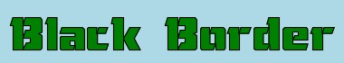
The default settings is "
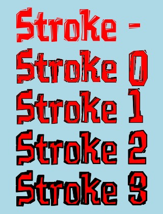
Note from the the above examples that setting a "
Here is an example of using an extremely large stroke width.
![[IM Output]](stroke_thick.jpg) Note that "
Note that "
![[IM Output]](stroke_outline.jpg) For more examples of using stroke see Compound Font
Effects. Have a special look at the "Balloon
Effect".
For more examples of using stroke see Compound Font
Effects. Have a special look at the "Balloon
Effect".
You can set the color of the line with a "
Also you can make a line slightly thicker by setting the "
But what happened to the white color we specified with the "
For example, you would probably think that this command would produce a very
thick line. It does, but as the "
But if the stroke color is also defined, you will get the thick line
requested...
If the "
Of course when you are armed with this knowledge, you can use it to be
creative, just as you can with font drawing.
Here I used the thinnest "
This produces the very strange result of a dotted line, consisting of black
dots and grey segments. This is the result of a weird "color beat frequency"
between the stroke, fill and background colors.
Here is an enlarged view of the line...
Note that this effect only appears on slanted lines, not pure horizontal or
vertical lines, where aliasing has no effect and thus no "color beat
frequency" effects.
Here I used different underlying fill colors on the enlarged view, so
you can see how the color changes the resulting beat.
As you can see, when drawing very thin lines, you can reduce that 'beat' by
either using the same fill and stroke colors, OR setting one of the colors to
none to turn it off. While the later is the best idea, the former may be more
practical for your specific programming needs.
Note the fill line thickness is '0'. But the the stroke line can have a larger
thickness. It is also a floating point value! A 2.5 pixel wide line is
perfectly valid.
![[IM Output]](bound_left_mag.gif)

![[IM Output]](bound_right_mag.gif)
 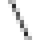
The two black parts (which was what is actually drawn) actually overlap each
other! In other words, even though we tried to draw the two areas separately
using drawn polygons, the filled area is slightly larger that what was
requested.
I also added (Plus Composited) the two images
together so you can actually see the overlap of the drawn black areas. If the
two polygons were a perfect fit the 'added' drawing would be a solid white
color.
The actual amount of overlap is equivalent to the default "
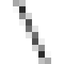
The two black parts (which was what is actually drawn) actually overlap each
other! In other words, even though we tried to draw the two areas separately
using drawn polygons, the filled area is slightly larger that what was
requested.
I also added (Plus Composited) the two images
together so you can actually see the overlap of the drawn black areas. If the
two polygons were a perfect fit the 'added' drawing would be a solid white
color.
The actual amount of overlap is equivalent to the default "
As you can see the special settings for the 'color fill' primitives do not have
direct equivalents in the MVG. That is the "-bordercolor" and the "-fuzz" factor setting. These must
be specified from the command line before using the "
You can override that global setting locally within the "-draw" MVG argument...
However settings set within a single "-draw" MVG argument only exist for the duration of that "-draw" operation. That is settings
within a "-draw" are local only
to that draw and do not carry into later separate "-draw" arguments.
If you plan to do a lot of operations, it may be better to do them all in the
single MVG string, rather than multiple "-draw" operations.
The '
Note however that '
As the objects were drawn in the same angular direction around the center, the
two closed loops will inclose an area that has a cycle value of 2. as such the
'
This means that you can generate a 'holes' in an object, by reversing the
direction, so as to keep the 'inside' of the object to the same side of the
direction of travel.
The result is the same regardless of the '
The 'large' and 'sweep' parameters are especially important as they are used to determine which of the four ways you will 'arc' from your starting point to the finishing point for that path component.
the second flag 'sweep' simply determines which side of the direction of the
straight line path the arc should be drawn.
The 'large' flag is used to select the longer path, going around the center of
the ellipse. That is set angle of the arc will be larger that 180 degrees. If
turned off you get the smaller 'arc' not containing the center of the ellipse,
and arcing over an angle less than 180 degrees.
Closing an arc with a 'Z' just draws a final straight line segment.
To create a full ellipse or circle you will need at least two 'arc' segments,
going from the first to the second point, then back to the first point. Both
arcs should have the same 'sweep' setting, so the arc will be on different
sides, with the different direction of travel. One of the arcs should have the
'large' setting set.
Note that if the line is too long to fit the given ellipse size at the angle
given, the size of the ellipse will be enlarged to fit the line with the
ellipse centered on the line.
This means that by using small numbers for the axis radii, you can just
specify a ratio of axis lengths, and gurantee the direct line path goes though
the center point of the ellipse. That is the path forms an elliptical
diameter from one side of the ellipse to the other. This is not nessarilly the
major or minor axis of the ellipse, just an elliptical diameter.
Of course using lengths of "
For a full circle centered between the two points use...
The SVG definition of 'arc' also declares that if either of the two radii are
zero, then a straight line should be drawn. Thus any arc with
"
If you specify a very large radii for the arc, and do not specify a 'large
sweep' for the return path, you can create lens shape of that radius between
the two points.
This type of arc is a key feature. It allows you to give what is an otherwise
straight line, a small but distinct curve very easily.
For example instead of a simple triangle like this...
You can replace each line with an arc using a large radius
to give them just a slight curve.
The end points of the lines have no changes, all that has happened is that
each '
The 'static' looking triangle of straight edges, now looks a bit like a sail
filling with a wind.
If you really want to make the line perfectly straight without converting them
back into true line segments, you can turn off the curve by using an arc radius
of zero.
Arcs are thus not only good for generating ellipses and circles, but it is
useful for drawing straight and slightly curved line segments. It is a very
versatile general point-to-point draw path.
One simple alternative to using Elliptical Arcs for generating separated
curved line segments is to use Quadratic Bezier Segments
instead. the main difference is that a single control point is used, rather
than a circular radius to define the arc. This also allows you to bias the
arc toward one end of the line segment, but at the cost of making it harder to
generate a symmetrical arc.
You can of course 'mix-n-match' by using both.
Pie Chart Example
To finish off using arcs, lets give an example of using for them to generate
circular wedges. Of course you may need to use some external trigonometric
mathematics (how good was your senior high school math?) to determine the end
path points that are required.
Note that all the arcs are drawn to the left of the 'line path', and are
flagged accordingly (using the 'sweep' flag). But if the arc covers an angle
larger than 180 degrees, the 'large' flag needs to be set. see the last 'gold'
component in the example above.
Also note that you should draw each section completely, even though this means
you may have to draw bordering lines twice. If you don't you will probably
either not completely fill that section with color, or the fill color will
overlay a previously drawn section outline.
The only way to avoid doubling up multiple lines is to draw all the filled
areas, then repeat so as to draw the outlines. That is you will need to
drawing everything twice, ensuring things match up properly. Thus, doubling
up of the outlines is probably the simplest solution.
Cubic Bezier curves can be defined using a '
The line connecting the control point to the final point on the path of that
path segment (control line) basically defines the direction of the curve
though that point on the path. A long control line will produce a smoother
curve at that point, while a short line generates a sharper curve at that
point. If the control point matches the point of the curve (control line is
zero in length) the curve with have a sharp discontinuity at that point, as if
only straight line segments were used.
As a more practical example, the following bit of code is extracted from the
IM Examples Logo Generator Script
which creates the curvy splash area of the IM
Examples Logo
The tricky part of the example is that I magick the Cubic Bezier path string
I use, into another path showing the control lines used to generate the bezier
curve. This lets me see the curve's control line angles and lengths, making
it a lot easier to adjust the results. Only one set of points needs to be
adjusted to show both curve and controls, keeping mistakes to a minimum.
If you look closely at the image you will see that the start and end of the
curve has two control lines facing in opposite directions. For a closed
continuous path, both start and end control lines should be at the same angle
(just in mirror direction), and of course the same length. This is important
to remember, as it is easy to get this wrong.
All the other points along the curve only has a single control point/line
which points in the opposite direction to the direction the curve is
drawn. The longer that line segment, less 'sharp' the curve is at that
control point, with a zero length producing a 'point'.
The '
I should warn you however that the '
In this case the arcs are not so uniform, and you get something like
an upside-down shark fin, rather than a sail.
Remember Quadratic Arcs are parabolas, while Elliptical Arcs basically
generate circular segments. This may be the key to determined which type of
arc'ing line segment you should use.
For more examples of this path function see, SVG: Quadratic Bezier Curve Commands.
Notice that the '
"
One common use of "
And finally, "
These operators have equivalents outside the MVG "
Flip image over...
Rotate by 30 degrees around the origin...
For more complex Affine transformations you can make use of the Affine Helper Scripts that were
created for the purpose. These scripts magick things like a rotation angle
and center point into affine coordinates that you can directly use in your
"
However by using Drawing Transforms we can easlly
add a 'angle of rotation' to the ellipse.
Note that 'center' of the ellipse (the point of rotation) was first
translated, before a rotation was applied. The '
 Under Construction
Under Construction

Not only that but ImageMagick also understands reading "MVG:" image file
format directly allowing you to draw such commands more directly. However
unless the MVG file defines a canvas, you may need to specify the initial
canvas ("-size" and "-background") for it to draw
onto.
You can move the initial canvas settings into the MVG image by adding a
'
Under Construction
Under Construction
The above uses "
Now the draw strings you generate can get fairly long, and could start to
cause problems with the length of your final command. So rather than
converting the points into long strings which we then pass to IM on the
command line, you can pipe draw commands to IM as a file instead.
I also this time use a SVG Path drawing method instead
of the Draw Primitive drawing methods. Also the
symbol I generate are triangles around each point.
The SVG Path actually makes this easier, by allowing
relative pixel moves, allowing you to design the symbol so it only requires
a single initial absolute move '
Now you can take this even one step further, feed a fully formed MVG file,
complete with draw canvas specification, directly into IM as a pipeline of
drawing commands. This time lets do a 'cross' which is similar to the
first 'plus' example above which needed a lot of calculations.
This uses the special shell programming technique where anything and everything
that is 'echoed' within the shell parenthesis will be fed into the final
"


 Examples of composting images onto a larger background are given in the
section on Layering Images. However
a looped method may be more useful, such as given in Programmed Positioning of Layered Images.
FUTURE: example of layering images using coordinates
Examples of composting images onto a larger background are given in the
section on Layering Images. However
a looped method may be more useful, such as given in Programmed Positioning of Layered Images.
FUTURE: example of layering images using coordinates
![[IM Output]](points_pixels.gif)
![[IM Output]](points_rings.gif) 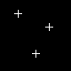
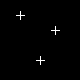
![[IM Output]](points_crosses.gif) The result can then be converted directly into a colored overlay by using the
Alpha Shape Operator.
The big advantage of this is that you don't actually need to know the
individual locations of each symbol. Or how many symbols there are. But that
can also be a disadvantage. A major Disadvantage is that the positions are
only at integer locations. You can not 'draw' using a floating point
'sub-pixel' positioning.
The result can then be converted directly into a colored overlay by using the
Alpha Shape Operator.
The big advantage of this is that you don't actually need to know the
individual locations of each symbol. Or how many symbols there are. But that
can also be a disadvantage. A major Disadvantage is that the positions are
only at integer locations. You can not 'draw' using a floating point
'sub-pixel' positioning.
![[IM Output]](../images/marker.png) For this I use a special script "
For this I use a special script "
This generates four files, such as "
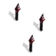
Only small images should be used, with the pixel points spread out enough that
the symbols do not overlap. This because Convolve will add together overlapping areas, making them brighter than
expected.
The above has been converted into an UNIX shell script "
This technique came out of a discussion on the IM Forums A Fun Experience with IM. The
user wanted to place tiny people, on a background image of a football field so
that their positions spell out a persons name, in the picture.
Fred Weinhaus noted
that by using a translation you can remove the need to calculate the circles
edge coordinate, but can just give the radius directly.
However when drawing multiple circles the above will need either separate
"
You can also generate a circle by drawing a very very short line with
'
This technique, unfortunately can not outline the generated circle, but for
covering large areas, large stroke widths can be useful. See Some simple examples below.
This method makes use of the SVG Path drawing method
so that the circle can be drawn without needing to calculate any extra
coordinates.
Only the initial absolute move '
Fred Weinhaus added the
following bezier circle method. It is very close to a real circle (though not
exact), and requires a floating point calculation.
If drawing an exact circle is not important, you can use this 4 Bezier segment
SVG path, that only uses the X and Y bounds of the circle for its calculation.
If you like one that is drawn completely relative to a center starting point,
you can use this technique. Only the radius value is used, making it simple to
generate, using only string functions in an API.
Can you think of other ways to draw circles?
Note that I drew the symbol so that its starting point is the very end of the
line. This way it can draw backward on top of the previously draw line,
making a very nice an neat symbol.
Arrows however have a direction associated. You could create a huge number of
arrow definitions at many different angles, and many programs do this. But as
the arrow is a vector, so why not rotate the arrow as a vector. The IM draw
command has drawing rotations (Canvas
Warping) built-in, so lets use them.
This also has the advantage of moving the position out of the
'
If you like to change the size of the arrow, add a "scale" draw option after
the rotate.
Note how it enlarged leaving the 'tip' of the arrow where you specify. This is
a very important aspect of handling arrows, as it is only the end point, and
angle of the line you are adding the arrow to that matters.
The order of the 'transforms' is important, and really in reverse of the order
they are actually carred out. That is scale is applied to coodinates first,
then rotate, and then translate. If the coodinate transforms was not done in
that order, we would end up also scaling the final placement of the arrow, and
it would not be where we expect it to be.
Also as the scale has two numbers, and the original arrow head symbol was
designed horizontally (angle zero), you can separately scale the width of the
arrow to its height. Also note how the stroke width also scaled with the size
of the arrow head, keeping things consistent.
Now as you are warping the canvas to draw individual arrows, perhaps with many
other drawing operations, you may like do them all in one "
The '
Or you can generate the rather complex smile of a clown.
What can you come up with? Let us know.
By replacing the first fill color with a gradient shade (using a In Memory Tiling technique) you can make
the cylinder look a bit more 3d-like...
By slowly refining the cylinder drawing (as was discussed in the IM forum),
you can go a very long way to generating very complex and visually appealing
cylinders. This included the addition of enclosing semi-transparent glass
cylinders, shadow effects, and labeling.
The final result of that discussion is a script "
![[IM Output]](cylinder_95.png) The script can generate an image of any size, adjusting all parameters
appropriatally basied on that size and other settings defined at the top of
the script. In also includes the concept of a 'glass thickness', to create
a gap between an enclosing semi-transparent glass cylinder, and the colored
cylinder within.
Note the very subtile shadings of the cylinder especially when the end of the
green cylinder overlaps the glass cylinder end! It is amazing what you can do
with a little bit of fore-thought.
The script can generate an image of any size, adjusting all parameters
appropriatally basied on that size and other settings defined at the top of
the script. In also includes the concept of a 'glass thickness', to create
a gap between an enclosing semi-transparent glass cylinder, and the colored
cylinder within.
Note the very subtile shadings of the cylinder especially when the end of the
green cylinder overlaps the glass cylinder end! It is amazing what you can do
with a little bit of fore-thought.
The first image is from one of the "
This use of percent 'escapes' (as well as '
For more details of the 'percent bug', and ways to avoid it when using
"
and for double quotes...
However all annotation quotes and escapes are completely ignored if you use
the '
However all escapes are completely ignored when read an annotation string from
a file.
For more information see Annotate Text Drawing
Operator, and especially Annotate Escape
Characters.
As you can see by the "
Perfect. A proper diagonal gradient is produced.
As you can see the internal MSVG conversion fails, returning a vertical
gradient rather than a diagonal one.
You can also see the actual MVG commands IM generates by converting a SVG
directly into a MVG file.
You can probably see how the MSVG convertor tried to magick SVG to MVG
drawing commands.
Things the current internal MSVG is known to fail with include...
Note that I used a PNG format image for the larger transparent background
version of the above example. This produces a cleaner image than a GIF image
format would produce due to semi-transparent edge pixels. PNG is always
recommended when transparency is involved in the final image.
For this to work however the 'development' "
Of course this will NOT get you the SVG output from the
"
This is of course not a complete list. Even many word processors, such as
OpenOffice, Word, and TeX, generally have various simple, though often
difficult to use, object editors.
However for general converting a vector graphic format to a different vector
format, do not use ImageMagick. ImageMagick is, and always will
be, essentially a raster image or bitmap graphics converter and manipulator.
For more information see A word about Vector
Image formats.
|
| |
-draw" operator.
The draw command started as a means to create simple images. But has expanded
over time to be the interface for vector graphic to raster image conversion.
ImageMagick Draw Commands
Images in computers are generally saved in two different ways. The first and most common way you have seen throughout these example pages is known as Raster Graphics. In this approach, images are stored in terms of a rectangular array of pixels. The other way is less common, and less modifiable, but in another sense more versatile, Object Vector Graphics. In this form the image is described in terms of lines, arcs, color fills, and sometimes depth. This is useful because you can scale these images to just about any size you want and they still display perfectly. You can also describe very large and complex images in a very small amount of space when compared to the raster format equivalent. Examples of vector graphic images include postscript, and the new SVG -- Scalable Vector Graphics. True-Type Fonts are also examples of vector graphics, as this allows the individual character descriptions to be used at any scale. The "-draw" image
operator, is a window into the ImageMagick vector drawing functions, and forms
a set of commands quite separate from the normal command line image operators
of IM.
| There are only a few vector graphic file formats in general use as every such format is usually very different from other such formats. The result is that there is very little in the way of code sharing possible. For this reason, ImageMagick is more concerned with the use of vector graphics to draw SVG format images. Postscript and true-type font graphics are passed to other external 'delegate' libraries and applications that are much more suited to drawing those kinds of vector graphic formats. That is not to say that delegates are not available for SVG. One example is a RSVG library or GTK SVG library which is available at compile time. IM will link to those libraries to magick SVG rather than attempting to do it itself. |
Primitive Draw Commands
Lets start with the oldest, simplest, and most common drawing primitives of the "-draw" image operator
of MVG commands.
Note that all arguments are treated as floating point, and do not have to be
integers, such as I typically use in these examples.
Color
Fill Primitives below for details.
![[IM Output]](draw_color_point.gif)
|
![[IM Output]](draw_rect.gif)
![[IM Output]](draw_rrect.gif)
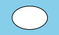 ![[IM Output]](draw_arc_partial.gif)
|
arc' draw primitive is listed with rectangles as it is
really just a 'ellipse' that is fitted inside the 'rectangle'
defined by the two coordinates. Partial arcs are rarely used as it can be hard
to determine the end points unless the angles are limited to multiplies of
ninety degrees.
The '
circle' and 'ellipse' primitives, involve
'center' coordinate with either a 'edge' coordinate, or 'size' and 'angle
values respectively.
|
![[IM Output]](draw_circle.gif)
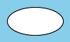 ![[IM Output]](draw_ellipse_partial.gif)
|
|
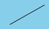
![[IM Output]](draw_polyline.gif)
![[IM Output]](draw_polygon.gif)
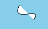 |
|
![[IM Output]](draw_image.gif)
|
-gravity".
Other modifiers for these operations, include:
"-fill",
"-tile",
"-origin",
"-stroke",
"-strokewidth",
"-font",
"-pointsize",
"-box",
Their are other modifiers but these are related to the more advanced Magick Vector Graphics language.
Bezier Primitive
The 'bezier' primitive is used to draw curves. Each command will
draw just one curve segment. Typically 4 points (8 numbers) is given: a start
point 'knot', two control points and an end point 'knot'. The two control
points define the direction and how fast the curve deviates from the attached
end 'knot' points.
To join two curves smoothly, the control point from the end should be mirrored
through the 'knot' to form the control point in the next Bezier curve.
For example here I draw two bezier curves that join smoothly together. Note
how the control lines and points (also drawn) mirror straight though the join
coordinate, both in angle and in length. This is important or the curve will
not be smooth.
|
![[IM Output]](draw_bezier_joined.gif)
|
| 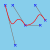 |
|
![[IM Output]](draw_bezier_no_curve.gif)
|
| 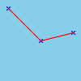 |
bezier' primitive is not really useful without specifying all
4 points. Only the first and last point are classed as 'knots' through which
the curve will pass (or end). All the other intervening points are regarded
purely as control points, effecting the curve in the sequence given, the
further away the control point is the larger its effect on that segment of the
curve.
|
![[IM Output]](draw_bezier_multi.gif)
|
bezier' curve segment, to keep things simple.
Actually I recommend you don't use the 'bezier' primitive at all,
but use the SVG Path Cubic Bezier instead for generating
curves. This has a special 'S" curve continuation function that
automatically does the appropriate control point 'reflection' to generate
smoothly joining curve segments and reduces the number of control points you
need to use. You can also define points relative to the last end point
in the path.
Color Fill Primitives
On top of the above 'simple' primitives, "-draw" also provides a set of color
fill or modification primitives. These modify the color(s) in the image
starting at the point specified, according to the method chosen.
These fill methods are actually not true 'draw' commands, but color
replacement function. They were added to draw as it was the easiest place to
insert their operations into ImageMagick in a very early version of the
program.
Just as in the above, the color used is set with the "-fill" color setting, but if set,
the "-tile" image will be
used instead.
The other setting options above are not used, and have no effect on these
operations.
Two extra settings as you will also apply to these primitives, "-bordercolor" and "-fuzz" factor settings. However
these settings can NOT be defined within the 'MVG' language, so can only be
set before using the "-draw" operator.
The first of these 'color point' you have already seen as an
alternative to the 'point' draw primitive in the above examples.
If you look carefully you will see the single white pixel we set in our test
image.
| 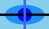 | |
point' function to paint over the red pixel with
a semi-transparent blue color, giving a purple result. If however use use
the 'color point' function (last or right pixel), the red color
is completely replaced by the semi-transparent blue pixel. It is not
overlaid.
| 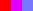 |
color' functions do full color replacement, while all
other color primitive 'paint' the color on top of the image. As such you can
use 'color' to draw the transparent color.
The 'color replace' draw function will replace all instances
of the exact given color at the location specified. And as you can see the
areas do not have to be connected.
|
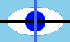
![[IM Output]](color_replace_fuzz.png)
|
-opaque" image operator can be used instead. This function also
uses a "-fuzz" factor
setting to increase the range of colors that match the given color.
The 'floodfill' method is also quite simple as it will just fill
the the whole area around the point selected and not select any other area of
similar colors which are not connected in some way.
You can also expand the area being filled by using "-fuzz" to include similar colors.
In this case we chose a value high enough to also include the cross border,
allowing the flood fill to 'leak' to the other side of the image.
|
![[IM Output]](color_floodfill.png)
![[IM Output]](color_floodfill_fuzz.png)
|
filltoborder' is like 'floodfill' except you
specify a color which borders the area to be filled, rather that the color to
be replaced by the fill process.
Of course a fuzz factor is also
recommended to include 'similar colors' in that border color selection, to
further limit the floodfill.
|
![[IM Output]](color_filltoborder.png)
![[IM Output]](color_filltoborder_fuzz.png)
|
reset' which just replaces, or
resets the whole image to the fill color. In this case the actual pixel
selected has no bearing on the results at all.
|
![[IM Output]](color_reset.png)
|
-tile" pattern to fill the area.
Alpha Fill Primitives
The 'alpha' draw primitive works in exactly the same way as the
'color' primitive described above, except it will not replace the
color of the areas selected, only the 'alpha' channel of the areas selected.
(That is only the 'alpha' hannel is adjusted by these fill functions).
Just as like the 'color' fill function, the 'alpha' value uses
the fill color (unless "-tile" as the source of the 'alpha value' to use).
Here we use the same 'color floodfill' example above, but here
only adjust the alpha channel to make the filled parts fully-transparent.
That is the original color is still present, just transparent!
|
![[IM Output]](matte_floodfill.png)
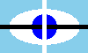 |
alpha reset' function can also be used to make a whole image
semi-transparent. Of course in this case we must output to PNG which can
accept semi-transparent colors in images.
| 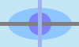 |
black' color component was not used in
operations, only the alpha component of the color. The images original color
is left as is.
FUTURE: Using "-tile" pattern for in interesting alpha effect.
Both 'color' and 'alpha' are full replacement of
color functions, which will always produce a Boolean (all or nothing) type of
color replacement. As such the edges of such areas will always show Aliasing effects.
Because of this, these are generally not good image operators for general
image development, except for setting the transparent areas of GIF images
(which are also Boolean). All is not lost however, as can be seen in the
examples for Background Removal.
Specifics about Draw Commands
Pixel Coordinates
The "-draw" command (and
many others in IM) use what is calls "Pixel Coordinates". That is
a coordinate of '10,10 is the center of the pixel 10 pixels down
and to the left from the top-left corner.
In this coordinate system 0,0 is the center of the top-left pixel, and w-1,h-1
is the center of the bottom-right corner. The actual edges are located at
-0.5,-0.5 and w-0.5,h-0.5 and the center pixel (if the image is an odd size)
is located at '(w-1)/2,(h-1)/2'.
However when you are processing an image mathematically (such as when using
distort) actual pixels have no real meaning, as such it uses "Image
Coordinates". In this system the actual edge of the image is at
'0,0' and 'w,h'. And the center of the image (which
may or may not be the center of a pixel) is at 'w/2,h/2'.
To magick 'pixel coordinates' to image coordinates, add ½ As such the
center of the top-left pixel is '0.5,0.5' and the bottom-right
pixel is 'w-0.5,h-0.5'.
Example: center of a circle in small image
Drawing with Gamma and Colorspace Correction
As with almost all ImageMagick operations, "-draw" is a linear operator. and
as such works in a linear RGB colorspace. This means to get nice smooth edges
you may need to do some gamma correction of images, before you save them so
they are stored using non-linear (gamma corrected) sRGB colorspace.
For example if you draw a large circle, and just save it...
|
To fix this we need to add a gamma correction to the image before saving it.
|
|
![[IM Output]](circle_sRGB.png)
|
| Note that sRGB colorspace (which is the correct way to save images) is not exactly the same as simply appling a 2.2 gamma correction. However the differences in results between the two are minor, and only visible in very very dary images. |
| Before IM v6.7.5-1 the colorspace names 'sRGB' and 'RGB' (linear-RGB), was actually reversed. As such on older versions of IM the two labels in the above should be swapped. |
|
|
|
|
|
|
The line in the above was drawn using a "-stroke" color. You can draw
the line using "-fill"
and get the same results, but then you will not have line thickness control
using "-strokewidth". See Stroke Color Setting
below for more information.
|
| Colornames are actually defined using values for 'sRGB' colorspace BUT are being applied by draw as if the image is in linear-RGB colorspace. As such using the above gamma correction with named colors (other than 'white' or 'black') will result in those colors becoming distorted. In such cases it may be better to not use gamma or colorspace correction, so that named colors will map correctly. Correct mapping of named 'sRGB' colors, to the colorspace of the image being draw to, will be fixed as part of IMv7 Development. |
Stroke, StrokeWidth and Fill Interaction
The "-stroke" and
"-strokewidth"
options are used when drawing an outline around a font's
edge.
These options commonly used with "-fill" to make text more interesting, for very little effort.
magick -size 380x70 xc:lightblue -pointsize 50 -font Chisel \
-fill green -stroke black -draw 'text 10,55 "Black Border"' \
stroke_font.jpg
|
-strokewidth 1" and "-stroke None".
But this makes the outline stroke invisible, leaving just the "-fill" color, you will not see it.
The only effect "-strokewidth" has when the "-stroke" is 'invisible', is on
font size attributes, which means it can still effect font positioning and the
size of a Label and Caption image generation.
Otherwise the width has not visible effect until you make the stroke visible.
To see how the "-strokewidth" actually effects the look of a font (when made
visible) here I have drawn some text with various widths from 'turned off'
and getting larger.
magick -size 320x420 xc:lightblue -pointsize 70 -font Vademecum \
-fill red -stroke none -draw 'text 30,80 "Stroke -"' \
-fill red -stroke black -strokewidth 0 -draw 'text 30,160 "Stroke 0"' \
-fill red -stroke black -strokewidth 1 -draw 'text 30,240 "Stroke 1"' \
-fill red -stroke black -strokewidth 2 -draw 'text 30,320 "Stroke 2"' \
-fill red -stroke black -strokewidth 3 -draw 'text 30,400 "Stroke 3"' \
stroke_table.jpg
|
-strokewidth" of
'0' is NOT the same as setting the "-stroke" color to
'none' (the default). The former makes a very very thin stroke
outline, while the latter effectively turns it off. In both cases the stroke
is still drawn.
However you should also note that even with a "-strokewidth" of
'0' the image outline will be expanded very very slightly over
that of just a plain 'filled' image (using a "-stroke" color of
'none'.
Essentually using any width smaller than '1.0' does not work
properly. And you should exercise caution in cases where this can matter.
Remember however that "-strokewidth" is also a floating point setting. That is a stroke
width of '0.5' is also valid. However usally this is only
important when you are attempting to draw Drawing Thin Bitmapped Circles with
the Anti-Alising turned off.
Here is an example of using an extremely large stroke width.
magick -size 320x100 xc:lightblue -font Candice -pointsize 72 -fill white \
-stroke black -strokewidth 15 -draw "text 25,65 'Anthony'" \
stroke_thick.jpg
|
-strokewidth" expands both lines inward and outward. Here is the
same example but with the font re-drawn, without the stroke outline, to remove
the inside part of the very thick stroke.
magick -size 320x100 xc:lightblue -font Candice -pointsize 72 -fill white \
-stroke black -strokewidth 15 -draw "text 25,65 'Anthony'" \
-stroke none -draw "text 25,65 'Anthony'" \
stroke_outline.jpg
|
Drawing (Stroke) Lines
The default line drawing in IM has few weird behaviours, which are worth knowing about. Here is the default line draw...
|
|
-fill" option.
|
-stroke" color.
| 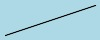 |
-fill" option?
This is the tricky aspect of drawing lines in ImageMagick. What the program
does is actually consider the line as a filled object about 1 pixel wide.
This is natural, as typically multiple lines are generally used to sweep out
an area that is to be filled.
So just as when we used stroke with fonts in the previous section, IM draws
the line (or object) using the fill color, then draws around it with the
stroke color. The result is that the above stroke color line is now slightly
thicker, with the fill color completely hidden underneath. If you make the
stroke color semi-transparent you can make that fill color visible again.
To summarize, lines will appear to be drawn with the "-fill" color, but that option is of
no consequence once the "-stroke" color has been defined as something other than the
default "none" or "transparent" colors.
The option "-linewidth" is really only an alias for
"-strokewidth",
and should not be used.
|
-stroke" color is invisible you can't see it. You only see the
inside 'fill' of the one pixel wide area of the line.
|
|
| The above result I actually regard as a bug. Nothing should have been drawn, as there is no 'area' to be filled, and no line 'stroke color' has been set. The reason IM currently does this is to avoid confusion with new users, but really it just causes problems with advanced users. See Draw Fill Bounds for more details. |
|
|
-strokewidth" setting is set to one, the above line will be
completely covered.
|
|
|
|
-strokewidth" setting of '0', just as I did for the
fonts above.
| 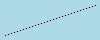 |
|
|
|
The "color beat frequency" effect is not unlike that of a "sound beat"
you get when you have two guitars which are very slightly out of tune. In
this case you get a black dot where the stroke color completely overrides
the underlying fill color and you get a grey dot where the stroke color
mixes with BOTH the fill and the background colors. The color mixing is a natural consequence of the anti-aliasing processes which IM uses to try to improve the look of lines and other draw objects. For more information see my Anti-Aliasing in IM discussion and examples page. |
|
|
| 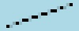 | |
| 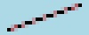 | |
|
| |
Lets compare that to a stroke of none...
|
|
| These results are caused by not only a buggy stroke width 0, causing a color beat, but also the 'fill color' being drawn with an extra 1.0 diameter thickness, when there is no actual area to be filled. This I also regard as a bug. See Draw Fill Bounds. |
Draw Fill Bounds
There are a few other points that you should note about the various draw primitives. The stroke-width works well for floating point values above a value of 1.0, but seems to break down for values less that 1.0. This is due to the implementation algorithm used and not simply because it is wrong, as it works fine with larger thickness lines. Basically if you use a stroke-width of zero you could expect that no stroke color will be added. Instead you get a sort of beat pattern where stroke color is at full strength when the line goes through the actual 'center' of the pixel.. What really should happen is the amount of color added to a pixel should reflect the area of the line being drawn, and not the pixels distance from that line. As such lines of zero width should add no color to the image, while lines of less than 1.0 thickness should only add a smaller amount of color. See the examples Drawing Lines, with StrokeWidth and Stroke above. The other problem is that the fill color is not being applied up to the edge of the shape (polygon) being draw, but ½ pixel further out. This includes the situation where no 'stroke' is being applied, and the edge should be exact. It also includes drawing a 'line', which really has a 'zero' fill thickness. Basically if you draw a line, without enabling stroke, technically you should see, no line as it has no 'fill' thickness. Instead lines are being drawn with at minimum 1 pixel wide 'fill' color included. This is for historical reasons, and generally avoids confusion by new users of IM. Unfortunatally it is NOT correct for advanced users. What that means is that if you draw two polygons using fill color only, that share an edge, that edge will overlap by 1 pixel as each polygon is ½ pixel bigger along all its edges. In other words polygons and other shapes do not fit together, but overlap! For example here I try use draw to divide an image into two halves (drawing black on white). To do this I draw two polygons that share an edge, exactly without overlap. The resulting 'tiny' images, have been enlarged for display.magick -size 10x10 xc: -draw 'polygon 2,-1 7,10 10,10 10,-1' bound_left.gif magick -size 10x10 xc: -draw 'polygon 2,-1 7,10 -1,10 -1,-1' bound_right.gif magick bound_left.gif bound_right.gif -compose Plus -composite bound_add.gif |
-strokewidth 1.0" setting.
So it is normally expected that this extra area would be covered by a normal
stroke width. However it can cause some real problems.
ASIDE: For a complete test of the join you would generate 50% grey areas on
a black background and add them together. That way you can see if the areas
not only 'overlap' (as shown above), but also test if they 'underlap' (leaving
a gap between filled areas) when you add the areas together. The resulting
image should be a perfectly smooth 50% grey color with no color variations
along the join. A transparency check would involve, a 50% transparent, 50%
gray color should be used on a fully transparent background.
To see an example of a perfect cut and re-add, based on a single mask image,
see the composition method examples, Compose
DstOut.
FUTURE BUG FIX: The area filled should be exact, but to compensate for this
when drawing shapes, the default 'stroke color' should be set to the fill
color (unless it is itself specifically set).
MVG - Magick Vector Graphics
The primitives shown above form the basis of all the "-draw" operations provided.
Together that are the starting point for a special internal language in
ImageMagick, called the Magick Vector Graphics language. For more
detail of this language see Summary
of MVG Primitives and Syntax on the IM website.
This "MVG" language designed with the goal of allowing ImageMagick to handle
the even more complex SVG (Scalable
Vector Graphics) language. It does this by attempting to magick images
given the SVG format to the simpler internal MVG format. For more details see
SVG handling below.
Consequently what you saw above is only a tiny part of the capabilities of the
"-draw" operator. Though
if you want to draw complex objects, I do recommend you create a separate SVG
format image of the object using an SVG editor such as "Sodipodi". (See Non-IM Vector Graphic Programs below).
Unlike SVG, MVG does not have any form of 'containers' or sets of image
commands. These are all removed during the conversion process to produce a
simplified sequence of MVG drawing commands. Instead it uses a concept of Graphic Contexts to save and restore various
drawing settings, which is what we will now look at.
Command Line Settings vs MVG Settings
First of all, almost all the settings you set via the command line options that the the draw primitives use have direct equivalents in the MVG drawing commands. The main difference between setting the via a command line option, (such as "-strokewidth") or using a setting within a MVG drawing string (for example 'stroke-width), is that the MVG setting only lasts for the
duration of the MVG command string.
Summary of the General Drawing Settings
__cmd_option__ __draw_MVG__ __Argument__
-fill fill color/tile for inside shapes
-tile fill image tile, replaces fill color
-stroke stroke line color/tile around the shapes
-strokewidth stroke-width pixel width
+antialias stroke-antialias 0/1 aliasing line edges
-font font font_name / font_file
-family font-family ?
-weight ? ?
-stretch ? ?
-pointsize font-size height in points
-kerning - extra inter-character spacing
+antialias text-antialias 0/1 aliasing drawing text
-box text-undercolor fill color for font bounding box
- decorate (None, Underline, LineThrough or Overline)
-gravity gravity (None, North, South-East,...)
-fuzz - color delta / percentage
-bordercolor - color
Notes:
- no such option ? unknown
These settings are usually well understood as they are regularly used and
demonstrated above.
| A font, stretch, style, and weight are used to identify a font from the ImageMagick font list. Most people however just select a specific font and pointsize to use instead. As such they are rarely used in IM. |
-draw" operator.
Some MVG settings would probably be more useful as global command line
settings, such as the 'decorate' setting for font drawing.
WARNING: "-gravity" is not
part of the SVG specification. Within MVG it is only used for text and image
placement, and justification. Their is currently no justification setting
that is separate to the default 'gravitational' effects. However as
justification is part of SVG text handling, that will probably change sometime
in the future.
Now the global command line settings (outside the MVG draw string) are used to
initialise the settings for each "-draw" operation you apply, which is why you can set a "-fill" colour which you can then
use to draw a circle of that color.
|
![[IM Output]](draw_circle_global.gif)
| |
| ||
| ||
|
![[IM Output]](draw_circle_multi.gif)
| |
MVG Specific Settings
Other MVG settings that control the way lines and objects are drawn are also useful to know even when using the primitive operations. These include..__draw_MVG__ __Description/Argument__ fill-opacity fill transparency, from 0.0 to 1.0 clip-rule fill style for crossed lines (evenodd, nonzero) stroke-opacity line transparency, number from 0.0 to 1.0 stroke-dasharray list of 'on' and 'off' lengths for lines stroke-dash stroke-linecap End of line look: butt round square stroke-linejoin Lines joins: butt miter round square stroke-miterlimit Angle when 'miter' joins become 'bevel' (or 'butt')Remember a full list of all MVG settings and drawing operators can be seen at Summary of MVG Primitives and Syntax in the IM website. Lets look at the effects of some of the simpler settings...
|
![[IM Output]](set_stroke_opacity.gif)
| |
![[IM Output]](set_fill_opacity.gif)
| ||
| 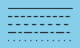 | |
|
![[IM Output]](set_endcaps.gif)
| |
![[IM Output]](set_linejoin.gif)
| ||
stroke-miterlimit' setting is rather hard to demonstrate.
This property defines the angle at which a 'miter' join is
changed into a 'bevel' join. Basically for very sharp angles
a miter can extend a long way from the actual join in the two lines. This sets
a maximum limit to that sharpness, and blunting the corner point when it gets
too long. Note however that it represents a trigonmetric value of an angle of
some kind, and is not a length or distance. The value must be greater than
1.0.
The above shows how for the join angle I am display, the miter will suddenly
be magick into a bevel somewhere between a value of 6 to 7.
For example, a 'stroke-miterlimit' of 1.414 converts
a 'miter' to 'bevel' for any angle of less than 90
degrees. A value of 4.0 (the default) converts the join for angles less than
approximately 29 degrees. While a value of of 10.0 converts them for an angle
less than approximately 11.5 degrees.
SVG Path Drawing
The SVG path is the basic drawing primitive of SVG. It is used to draw lines shapes, circles, curves, arcs and so on. The full specification of the SVG Paths can be found in the SVG Path Specification document. This however is not an easy document to read as it is really for programmers, not users, so I'll simplify and summarize the path specification...- Letters are commands, while all numbers (floating point) are arguments.
- Commas or spaces may be used as argument separators, otherwise they are completely ignored.
- The last two arguments (x,y) of each path component will become the end point (or 'knot') of that path component.
- Uppercase letters specify the final point absolute coordinates.
Lowercase letters are relative to the end point of the previous component.
For example: "M 1,2 l 3,4 l 2,-4" is the same as "M 1,2 L 4,6 L 6,2".
That is 3,4 was added to 1,2, to draw a line to 4,6.
Then 2,-4 was added to draw a line to the final coordinate of 6,2. - The arguments of each element may be repeated without re-issuing the same path letter, by adding more number argument groups. However for curves, I recommend you add the function letters anyway for ease of reading.
- Repeated arguments of "
M" or "m" are treated as "L" or "l" respectively.
For example: "M 1,2 3,4 5,6" is the same as "M 1,2 L 3,4 L 5,6"
And : "m 1,2 3,4 2,-4" is the same as "m 1,2 l 3,4 l 2,-4" - For cubic bezier all points (control and end knot points) are given relative to the end point of the previous path component.
|
![[IM Output]](path_open.gif)
![[IM Output]](path_complete.gif)
![[IM Output]](path_closed.gif)
|
Z' only closes the loop. It does NOT create a
separate object. As such two 'closed' paths are still classed as being a
single drawn object, weather they are overlapping or completely disconnected.
Here we show two closed but overlapping loops, drawn in the same direction. As
only a single path is used the object is a single object, and the
'fill-rule' setting controls how the overlapping region is
to be filled.
|
![[IM Output]](path_evenodd.gif)
![[IM Output]](path_nonzero.gif)
|
evenodd' rule made that area unfilled, while the non-zero
'nonzero' rule filled it. Note however that all paths are
visible, as they are actually the same object.
The direction in which paths are drawn is very important, and in general all
the paths should be drawn in exactly the same direction relative to the
'inside' of the object.
For example here I draw the second object in the reverse direction to the
first. As such when the two objects overlap that area is circled
'zero' times. That is it will be unfilled no matter what
'fill-rule' is used, creating a 'hole'.
|
![[IM Output]](path_rvs_nonzero.gif)
![[IM Output]](path_rvs_evenodd.gif)
|
|
![[IM Output]](path_with_hole.gif)
|
fill-rule' setting, as
the hole is both 'even' and 'zero' so is unfilled.
Of course if you use a completely separate 'path' element, you
will generate a completely separate object. In which case, the
'fill-rule' does not apply and the objects are just drawn on top
of each other, in the order given.
|
![[IM Output]](path_separate.gif)
|
FUTURE: coordinate aligned paths "H" and "V"Elliptical Arcs are the circle drawing function of SVG Paths...
The 'large' and 'sweep' parameters are especially important as they are used to determine which of the four ways you will 'arc' from your starting point to the finishing point for that path component.
The two flags 'large' and 'sweep' define which of the four arcs of that radius
will connect the two points.
|
![[IM Output]](path_arc2.gif)
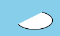 ![[IM Output]](path_arc4.gif)
| ||
|
![[IM Output]](path_arc5.gif)
![[IM Output]](path_arc6.gif)
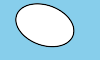 | ||
|
1,1" results in a perfect
half-circle, going from one point, to the next point. The elliptical angle
in this case will make no difference.
|
![[IM Output]](path_hcircle.gif)
|
| 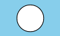 |
0,0" radii, is just a simple straight line arc...
| 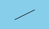 |
|
![[IM Output]](path_lens.gif)
|
|
![[IM Output]](triangle.gif)
|
|
L' was replaced by an arc segment. The size of the arc
however should be proportional to the length of the line. As I did not do
this the longer diagonal line has a far stronger deeper curve, than the other
two.
Remember when resizing or scaling the object being draw you should also scale
the radius by the same amount as that lines length so the curve is resized
accordinally, so the arc also scales correctly.
Note that the 'sweep' flag controls if the curve bulges outward or inward,
according to the direction each path segment is drawn (see above).
| 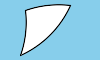 |
|
![[IM Output]](piechart.jpg)
|
C' function
defining two control points, and the final end point. For continuing Cubic
Bezier curves that use a mirror image of the last control point (for a
continuous curve), you can use a 'S' function.
Here is an example. Because of the complexity of this function, I
pre-prepared a canvas showing the location of the control points, as well as
the 'assumed mirror' of the last control point.
|
![[IM Output]](path_cubic.gif)
|
|
![[IM Output]](curvy_splash.gif)
|
S' function internally generates the mirror control
point/line for the next segment from the data of the previous segment, so as
to produce a smooth continuation of the curve.
For more examples of this path function see, SVG:
Cubic Bezier Curve Commands.
Manually Generating a Bezier Curve is relatively straight forward
without needing any fancy GUI tools.
- First define all the coordinate points you want you curve to go though, repeat the starting coordinate at the end of the list.
- Now expand this list by doubling all the x,y coordinate points into pairs
and add a '
S' (Smooth Cubic) function before every pair. The first number in each pair is the control point connected to the second number representing the point on the curve. The first point pair however has this reversed, with the first point being the start of the curve and the second representing the first and only inverted control point. - Change the function letter of the first pair of coordinates from an
'
S' into an 'M', then add a 'C' between this pair of coordinates. Finally remove the 'S' from the second pair of coordinates, to complete the initial Cubic ('C') function. - Complete the path by adding a final '
Z' to close the curve.
See the example sequence above as to how it should look. - At this point you can test draw your path. The path will only consist of straight line segments as all control lines will be of length zero.
- All you need to do is now slowly and carefully adjust the position of the
controlling line segment (the first coordinate of each '
S' pair) to get the final curve you want. Do not make control lines too long, or in the wrong direction or you'll get a very funny looking curve. - To help see your changes and find mistakes, use the conversion
"
sed" command above to draw the control lines between the path control points and the curve control point. Note however that zero length control lines are not visible, but as the lin will produce a sharp point the position should be obvious. - Finally ensure the first control point/line after a '
C' is exactly opposite that of the of the ending control/line, at that same position.
Do you know of other ways of extracting a bezier curve (giving either two or one control point per point on curve) using a GUI tool. Or perhaps some other technique for generating such curves? Email me! I'd love to hear about it. You will be credited with the technique as others have.Quadratic Bezier is a simplification of the Cubic Bezier function, when the two control points are merged into a single control point. Again you can start the curve with a '
Q' function, and then use a
'T' function to continue the curve, mirroring the last control
point.
|
![[IM Output]](path_quad.gif)
|
T' continuing function really
only works for paths which connect points that are equally spaced. I do not
recommend its use.
The advantage of Quadratic Curves is as a replacement for Elliptical Arcs as it uses an actual position, rather than radius for the
arc. It can also bias the arc in favor of one end over another, which not
practical when using Elliptical Arcs.
|
![[IM Output]](triangle_bulge_2.gif)
|
Warping of the Drawing Surface
On top of these abilities, the drawing surface on which the objects are drawn can be warped in various ways to allow you to do some amazing things. First you can apply some general drawing surface modifications such as... 'translate', 'rotate', 'scale',
'skewX', 'skewY', and 'affine'.
For example given a 'path' of lines we can "translate" the
origin or 0,0 point of the drawing surface to another location.
|
![[IM Output]](transform_translate.gif)
|
0,0' or origin of the drawing area is now
centered on the image, though the Y axis remains negative at the top and
positive at the bottom of the image.
The "rotate" operation will rotate the drawing surface
so anything later drawn on that surface will be drawn rotated. Of course it
will rotate around the translated origin, so it is a good idea to use both
transformation operators together.
|
scale" will magnify and shrink the drawing surface around the
origin.
|
![[IM Output]](transform_scale.gif)
|
scale" is to flip the Y axis so that the a
positive Y value is upward. Of course the origin should also be moved either
to the center, or the lower left corner, to keep things in order.
|
![[IM Output]](transform_flip.gif)
|
skewX" and "skewY" shear the
image in the X and Y directions. For example, here we use "skewX"
to give the vertical Y axis of the image a slant.
|
![[IM Output]](transform_skewY.gif)
|
-draw" string, for general use.
However these command line versions are operators and are applied immediately
to images already existing in memory rather that to a drawn surface only which
vector objects have yet to be drawn. For more details see Distorting Images.
Affine Warping of the Drawing Surface
All five of the above canvas transformations can be combined into a general Affine Matrix Operator. either by using the MVG primitive 'affine' or setting the affine transformation using "-affine" before calling "-draw".
Affine transformations use a set of 'Matrix Coefficients' which defines
how the coordinates you give should be modified into actual drawing coordinates.
For more details on how these 'coefficients' actually work, see
Affine Matrix Transforms.
For example... To just set a central origin relative to while objects are
drawn...
| 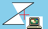 |
|
![[IM Output]](affine_flip.gif)
|
|
![[IM Output]](affine_rot.gif)
|
-draw affine", or
"-affine" setting.
Push/Pop Context
Some MVG primitives actually rely on the use of these transforms to be used properly. For example the Ellipse Primitive can only be directly specified with orthogonally aligned axis.
|
![[IM Output]](ellipse_orthogonal.gif)
|
| 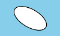 |
ellipse'
was then drawn at that translated position at '0,0'.
The above also shows two new MVG drawing primitives. 'push
graphic-context' and 'pop graphic-context'. This are not
strictly needed in the above example, but they are recommended when doing
major drawing transformations.
What the 'push' and 'pop' primitives do is save the
current drawing state or 'graphic-context', then restore it again afterward.
Any drawing settings that are changed between the two primitives will be
forgotten. That includes and surface warping, such as
'translate' and 'rotate', as well as the color
settings 'fill' and 'stroke', or anything else that
modified the drawing 'state'.
These primitives make it easy to draw very complex objects with many
transformations, and then restore things back to a more 'normal' situation for
later drawing operations. You can see a more practical demonstration of this
in Drawing Arrows below.
Push/Pop Special Objects
More settings used specifically for MVG handling of SVG format.
font-family font-stretch font-style font-weight
encoding 'UTF-8'
push defs
push gradient 'def_name' linear X1,Y1 X2,Y2
stop-color 'color' where
stop-color 'color' where
# where is a point between the two pixels given (0 = X1,Y1 1= X2,Y2)
gradient-units 'objectBoundingBox|userSpaceOnUse'
affine ....
pop gradient
push gradient 'def_name' radial CX,CY FX,FY R
# Here CX,CY is the center of the radial gradient of radius R
# the FX,FY is the focal, and is usually the same a CX,CY
# unless you are trying to warp the gradient in a specific direction
stop-color 'color' where
...
pop gradient
pop defs
push graphic-context
fill 'url(#def_name)'
... draw things here ...
pop graphic-context
For examples see Florent Monnier's development site...
http://www.linux-nantes.fr.eu.org/~fmonnier/OCaml/MVG/
Reading MVG Files
As you can see in the above examples the MVG "-draw" arguments can become very long. In fact the conversion of SVG to MVG can produce some extremely long MVG drawing arguments (see below). However the general command line interface of IM allows you to read any string argument from a file by using a "@filename" argument instead.
This is handy as it means you can read in your very long and complex MVG
drawing commands from a separate file.
For example, If I put MVG operations into a file called
"draw_circles.mvg", I can then draw it like this...
| ||
| 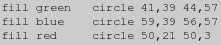 |
![[IM Output]](mvg_draw.gif)
| |
| ||
|
| ||
viewbox' to the MVG file, with appropriate background color fill
draws. That completes the MVG image file as a complete image definition.
| ||
![[IM Output]](mvg_circles2.mvg.gif)
|
![[IM Output]](mvg_image.gif)
| |
There is currently only one way of reading an external MVG file from inside
a MVG argument string, and that is using a 'image' drawing
primitive. Unfortunately this converts the MVG include into a raster image
BEFORE overlaying that image onto the drawing surface.
In other words there is currently no MVG 'include' function.
:-(
|
You can generate the low level draw operations of IM, using the "+render" to record them. When you then give a "-render" setting/operator, IM will immediately draw those saved operations. Strangely just outputting to a "MVG" file also seems to do this... magick ... -draw '....' draw_commands.mvg NOTE: if you draw a curve while outputting a MVG format file, the file lists the curve as a series of short line segments, rather than the original curve. You can of course go the whole way and use the more universal SVG format. See "SVG format handling" below.
MVG Alpha Composition
I have not seen any use of Alpha composition (other than 'painters' algorithm which is basically a 'over' alpha composition) for the drawing of objects. However that is not to say it can not be done. If you like to compose your rectangle, ellipse, circle, or whatever with a different alpha composition (such as 'DstOver' which is an Under-like composition), then draw your figure on a blank transparent canvas the same size as the original and compose it onto your image. However as SVG allows you to use alpha composition to draw text and other items onto images, I would imagine that it will be a future addition. Stay Tuned!
Drawing Symbols
Sometimes you have a set of points on an image where you want to draw reference symbols, like crosses, circles, etc... Unfortunately at this time IM does not have commands to draw such symbols easily, but with a little bit of extra work you can draw such symbols.Symbol Drawing Techniques
The trick to drawing multiple symbols in a given list of locations, is to generate the MVG drawing commands using a shell script, or whatever API you are using, so as to transform the given a set of points into the appropriate set of drawing commands. For example here I magick a line of points, into a 'plus' at each of those points...
| 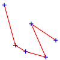 |
tr" to separate each point (two numbers) into one
point per line, then uses "awk" to do all the mathematical
calculations needed to draw the 'plus' over the given point. You can use
anything you like for this as I am simply applying a form of text macro
expansion on the input point list. Just about any programming language can do
this. For the above shell script case I just found "awk" to be
the simplest and fastest means.
Actually you can even use Imagemagick itself to do that 'macro' expansion using
the "magick" format option... For example here I use it to
calculate a point on the circumference of the circle, for this 'point symbol'.
|
![[IM Output]](points_circle.gif)
|
|
![[IM Output]](points_tri.gif)
|
M' before giving the sequence of
'moves' and 'lines' to draw the symbol. Because of this you actually do not
need any floating point calculations at all, as IM draw will do the
positioning mathematics needed.
The relative move SVG Path item 'm' is
broken before IM v6.4.3-5. If your IM is older than this, the above (and
next) examples may not draw anything. You can fix this for older versions
by replacing the relative moves 'm' in the above with an
appropriate sequence of relative lines, 'l'.
|
|
![[IM Output]](points_cross.gif)
|
magick" command as a MVG file. The first 'echo' defines and
fills the drawing canvas for the image, while the 'while' loop converts each
'point' giving into a circle of the given radius.
The advantage of this method is that you don't get any string limitation that
you may get using the other two methods.
Other symbols that you could generate include boxes, diamonds, error-bars,
etc...
Also see 'Drawing Circles below, for other circle
methods, including a no-calculate relative 'path' circle draw.
Alternatives to Drawing Symbols
There are other ways of adding symbols to images, other than directly drawing them.Symbol Fonts
You can extract symbols from a Symbol Font and save them as a small bitmap. You can also use small pre-defined but colorful images for this too. However this may have trouble exactly positioning the font relative to a specific pixel. That is to say it is not a very precise technique. But you can compose any image at any pixel location. For example these symbols were extracted from a number of fonts, for specific use in these example pages.
Morphology
Another alternative is to use Morphology, to 'Dilate' a single pixel, using special 'shape' kernels such as 'Disk'
and 'Ring' and 'Plus', or even your own User Defined Kernel.
For example...
magick -size 80x80 xc:black -fill white \
-draw 'point 20,15 point 55,30 point 40,60' points_pixels.gif
magick points_pixels.gif -morphology Dilate Ring points_rings.gif
magick points_pixels.gif -morphology Dilate Plus:4 points_pluses.gif
magick points_pixels.gif -morphology Dilate Cross:3 points_crosses.gif
|
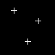
Convolution
An almost identical technique is to use 'Convolve', with specially designed kernels, which allows you to set various shades of gray, rather than just a simple on/off result, as above. By using a different User Defined Kernel, for each channel of the image (red, green, blue, and alpha), it is even possible to create multi-colored symbol from each pixel coordinate.image2kernel" I wrote to magick a colored image (see right) into
separate floating point convolution kernels for each of the channels.
|
marker_R.dat", one for each channel of the very small input image.
which are User Defined representations of
the image (with the origin centered in the image).
Now using those kernel data files we can Convolve those single points into our colorful marker image on
a transparent background.
magick points_pixels.gif -alpha off \
\( -clone 0 -morphology Convolve @marker_R.dat \) \
\( -clone 0 -morphology Convolve @marker_G.dat \) \
\( -clone 0 -morphology Convolve @marker_B.dat \) \
\( -clone 0 -morphology Convolve @marker_A.dat \) \
-delete 0 -channel RGBA -combine point_markers.png
|
Before IM v6.7.6-9 The Combine
Operator requires the transparency channel of the image to be given as
'opacity' values rather than alpha values, as such the resulting alpha channel
created needs to be negated. EG:
|
convolve_image", to make it
easier to use.
convolve_image points_pixels.gif marker.png point_markers.png |
Layered
A different technique such as Layers of Images, positioned using a list of the pixel that you extracted from the source image, may be the better approach. You can overlay more distant symbol images first, before the foreground images, and you can programmically pick, or randomise, what symbols replaces what point. For an example of this see Pins in a Map.Drawing Circles
The draw options provide you with a number of ways to do something very basic... Drawing Circles. You can, for example, draw a circle though any point on its circumference. Thus you will need to calculate a center point and a second point that is the radius (say 25 pixels) away from the first point.
| 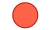 |
|
![[IM Output]](circle_circle_trans.gif)
|
-draw" operations for
each circle, or use Context Pushing.
Using an ellipse you can directly specify the radius as axis lengths
|
![[IM Output]](circle_ellipse.gif)
|
stroke-linecap round'. The stroke width then sets the circles
diameter. NOTE the line must have some length (no matter how small) or draw
will draw nothing.
|
![[IM Output]](circle_line.gif)
|
|
![[IM Output]](circle_path.gif)
|
M' is needed to define the
center, the '25' and '50' in the rest of the path
components that follow define the circle radius and diameter relative to this
center.
The relative move SVG Path item 'm' is
broken before IM v6.4.3-5. If your IM is older than this, the circle may
only appear as a single pixel. You can fix this for older versions by
replacing the 'm' in the above with a 'l'.
|
|
![[IM Output]](circle_bezier.gif)
|
| 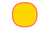 |
|
Drawing Arrows -- position, rotate and scale symbols
Using the above techniques you can create a special symbols such as an arrow head, that you can position so its point is at the very end of a line, and draw over it.. If you draw the arrow after the line (typical situation) then the arrow will be drawn on top of the line. However their are three types of arrows, that can be defined, and each type is defined in different ways depending on the use it is put to.- Measurement where you simply want to mark the ends of a line with an arrow head to indicate the limits of a measurement in some engineering diagram. Very simple.
- Vectors, showing direction and intensity of some value.
For example in a weather wind chart. A tail is required and the 0,0 point is the end of the tail. Often a large grid of such vectors is created. - Indicators, that point out some detail.
For this the 0,0 point probably should be either the tip, or some distance in front of the arrow itself.
Measurement Arrows
Simply adding an arrow head to the end a line is relatively easy to do. You basically create a 'arrow head' symbol, and draw it at the right position. For example...
|
|
path' definition of the arrow head, allowing you to specify the
whole path as a 'constant'...
| 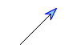 |
| 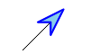 |
|
|
-draw" operation. Say to draw the
line and then add arrows at BOTH ends, requiring different sets of colors,
positions, rotations, and may be even different scales. That means we need to
limit the scope of the canvas warp to the drawing of each individual arrow
head. If you don't limit the scope you may start to effect other later drawing
operations later and can never be quite sure what you are generating.
To limit the scope of the warp (and all other drawing attributes) you wrap the
section involved in a "graphic-context" ...
|
|
push' essentially saves all the current drawing attributes
away for future use, while the 'pop' restores those attributes
replacing whatever settings (colors, warps, positions etc) with the previously
saved settings. This means that after 'popping' the 'canvas warp' is
canceled, and draw is returned to the state it was in before things were
modified.
The above technique is just one way of generating arrows, a good one when
drawing arrows as part of measuring distances, such as in technical drawings.
Vector Arrows
Vectors as mentioned show both direction and intensity of some value. That means that the length of the arrow is variable, and the arrow head could be at just about any position away from the vectors starting point. Now you could do some heavy math to calculate the position that the arrow head should be places given the vectors length and angle, but their is a much better way, which lets ImageMagick do those calculations for you. The solution is to draw the vectors length as a horizontal line of the right length in the Warped Canvas Space. When that line has been draw, simply translate the drawing space again to the end of the line while the canvas remains 'warped'. You are now positioned correctly, with the right rotation to draw the 'arrow head' of the vector as normal. For example, here I generate a 70 pixel long vector at a -35 degree angle.
| 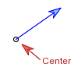 |
Indicator Arrows
In the above I also demonstrated an indicator arrow pointing to the start point of the previous vector arrow. However instead of drawing the arrow like I did previously, I created it as a reversed arrow symbol, that starts 10 pixels away from the origin (or start point). That is a symbol is located at position I want to indicate, so I don't actually want the arrow directly on top of that position, but a litte away from it. Now while indicators are simpler to handle than vectors, typically not needing a variable length, you typically want to add text at the far end of the indicator to specify what is being indicated. As before it can be difficult to calculate that position, so why bother. The solution for positioning the text is also the same as for vectors. Keep the original warped space used to draw the indicator arrow, and translate the origin to the tail end of that arrow (40 pixels horizontally in warped space). Now that we have re-positioned things, we can un-rotate the warp around that new position, so you can draw the text as normal (with a slight offset). Unfortunately while the default text justification of 'left' works in the above, you can not currently specify a text justification in MVG, as a separate setting to gravity. If this is a problem put in a request on the IM bugs forum, and hopefully text justification (as separate to gravity positioning) will become a reality, especially as it is actually part of SVG specification.Drawing Objects
Wide Strokes of Color
You don't have to completely enlose a fill area with a path or outline to create various shapes. Using very large and wide Strokes you can generate big areas and swatches of color on a canvas.
For example a broad stroke elliptical arc can generate a nice area of color
that I have actually seen used in creating a poster.
|
![[IM Output]](arc_background.gif)
|
|
![[IM Output]](clown.gif)
|
Cylinders
In a IM Forum Discussion there was a heavy discussion on drawing cylinders, and specifically shaded cylinders, using ImageMagick draw commands. The trick to cylinder drawing is to draw 'roundrectangle'
primitives, in such a way that the ends form ovals. That is if the cylinder
is say 50 pixels wide, you round the corners of the rectangle by 25 and 12
pixels respectivally. That is half the rectangle width, and then half again.
A cylinder thus becomes just two rounded rectangles drawn on top of each
other. The second ligher colorfilled 'end oval' being sized to exactly double
that of both corner dimentions. For example...
|
| 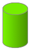 |
cylinder_bar", generating
a cylinder percentage bar...
cylinder_bar 95 cylinder_95.png |
Drawing Special Characters in the Text String
To Quote or Backslash?
One of the biggest problem people have with -draw is the drawing of characters that also have special significance to UNIX shells and the DOS command line or even other languages like C, Perl, PHP, R, or Visual Basic. The biggest culprit in this regard are the two types of quoting characters, as well as variable substitutions characters like dollars '$' and
the shell and ImageMagick escape character, backslash '\'.
Basically as the MVG argument to "-draw" needs to be quoted, and the 'text'
string argument within also may need some extra quoting as well.
To solve this, users typically use two different quote characters, one for the
shell and a different one for the MVG text string.
-draw '... text 0,0 "string" ...'
-draw "... text 0,0 'string' ..."
$' without escaping.
The selection of the right form will solve most problems, but some characters
still present difficulties, and each solution depend on exactly what set of
quotes you use, as they also define how special characters should be escaped.
Here are the four cases of quoting, and special character handling...
- Using Single Quotes for the shell argument,
with Double Quotes around the MVG text string. The simplest technique for handling draw text strings is to use a single quote for the wrapping shell argument. This however means that to include an apostrophe in the drawn string you need to leave the shells 'single quote mode' and supply that apostrophe outside the shells single quotes. For example here is how to handle the four special characters I talked about.
Note that as the dollar sign is not needing escaping, you also can not use it to substitute the contents of a shell variable. It is important to remember that the backslash is the only special character that the IM draw string handles. Also its reason for existence is purely to allow you to escape any 'IM draw string quotes', such as we used above for the double quotes. Beyond this, all the other weirdness is caused by the UNIX command line shell, and not IM. PC-DOS has its own weirdness, and I would appreciate input on escaping special characters when using IM from environment.magick -size 250x50 xc:none -box white -pointsize 20 -gravity center \ -draw 'text 0,0 " '\'' \" $ \\ " ' \ -trim +repage text_special_sd.gif![[IM Output]](text_special_sd.gif)
- Using Double Quotes for the shell argument,
with Single Quotes around the MVG text string. If you do want want to insert a 'shell variable' into the drawn string, then you will have to use double quotes for the outside shell argument. This makes the whole matter much more complex, as you lose the protection of the shell and you now have to not only escape the dollar '$' signs, but also backslashes '\' as well. On the other hand, the shell will not then need to use single quote characters as its end-of-argument de-limiting character, so that aspect is simplified. Lets summarize the results for our short list of special characters.
Notice that if you want to draw a backslash itself, the MVG text string needs the backslash to be doubled (as in the previous example), but the shell itself also needs each of those backslashes doubled, producing a total of four backslashes just to produce one such character. This doubling can very quickly become overwhelming and confusing, requiring lots of backslashes to achieve what you want. Just take is slow and easy, and you will figure it out for your situation.magick -size 250x50 xc:none -box white -pointsize 20 -gravity center \ -draw "text 0,0 ' \\' \" \$ \\\\ ' " \ -trim +repage text_special_ds.gif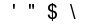 - Using Single Quotes for the shell argument,
with Single Quotes around the MVG text string. Lets finish this off with a summary of the final two quoting combinations. I'll leave you to figure out how they are decoded by the shell and MVG.magick -size 250x50 xc:none -box white -pointsize 20 -gravity center \ -draw 'text 0,0 '\'' \'\'' " $ \\ '\'' ' \ -trim +repage text_special_ss.gif![[IM Output]](text_special_ss.gif)
- Using Double Quotes for the shell argument,
with Double Quotes around the MVG text string.magick -size 250x50 xc:none -box white -pointsize 20 -gravity center \ -draw "text 0,0 \" ' \\\" \$ \\\\ \"" \ -trim +repage text_special_dd.gif![[IM Output]](text_special_dd.gif)
-draw"
arguments from the command line have to deal both with the command line shell
as well as backslash and quote escaping within the MVG text string. The
results can be confusing and tricky. Just remember that the shell treats the
two types of quotes differently, while the MVG text string does not.
Of course in complex scripts, the better way may be to avoid the shell and any
scripting problems entirely. You can do this by reading the "-draw" arguments from a MVG draw
file.
-draw @drawfile.mvg
| |
![[IM Output]](text_quotes.gif)
|
MVG" text files I used. It
contains no shell escapes or quoting. As such only the MVG quoting and
escapes are present.
Note that in the above if I had used single quotes for the MVG text string,
the only change is that I would need to backslash the single quote characters
rather than the double quote characters in the string.
About Percent Characters
Just one final point about special 'escape' characters in the "-draw text" operator. Percent
characters '%' should draw 'as is'. You should not need to do
anything special to draw them. If they don't draw 'as is', then you have an
old version of IM and should upgrade ASAP.
Up until IM version 6.2.4, the '%' character was used as an
escape character to include extra image information in the drawn text
string. This is no longer the case as such escapes were confusing and
incorrect when SVG images also tried to draw percent characters.
|
\n' newline escapes)
was deemed incompatible with the "-draw" operator, and MVG format's intended use for handling SVG
image formats. As such from IM version 6.2.4 onward, % escapes do not work,
and backslashes only escape itself and the surround quotes.
|
![[IM Output]](text_escapes.gif)
|
-draw" in older
ImageMagick's, see the Drawing a Percent
Bug page.
Annotate instead of Draw
The better way of avoiding these types of problems is to use "-annotate" rather than draw for
text drawing. This operator is a wrapper around the draw operator and allows
the use of all the capabilities of draw, but in a simpler form.
Basically this operator only need one set of quoting (for the shell). This
makes dealing with special characters a much much simpler.
Unfortunately while you no longer need to escape quotes for IM, you now have
Percent Escapes, such as
'@' file reads, '\n' newlines, and other percent
escape expansions.
For example, using single quotes...
|
![[IM Output]](annotate_s.gif)
|
|
![[IM Output]](annotate_d.gif)
|
@' escape to read the string from a file.
For example here we include information on an images width and height!
| 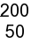 |
|
![[IM Output]](annotate_file.gif)
|
IM and SVG handling
SVG Input Drivers: RSVG vs MSVG
Handling the actual SVG image format is a very complex business. The engine needs to handle all its aspects, as defined by the SVG -- Scalable Vector Graphics document. Something that requires a lot of programming effort, and time. Therefore, ImageMagick provides two methods in the handling of SVG format images. The first is to use an open source RSVG library, to magick the SVG format into a raster image that IM has no problems handling. This engine is complete in just about all aspects of SVG handling. The second method is for IM to try to magick SVG into MVG, using a built-im method called MSVG. MSVG tries to magick a SVG image into the IM "-draw" operators "MVG" drawing language. A lot of the functionality of the draw MVG was created specifically for this purpose. Unfortunatally while the basic line drawing and coloring is present, it is far from being a complete SVG convertor. You can force the use of the internal MSVG converter by reading the SVG image using using the special input format "MSVG:" (added IM v6.3.4).
But if the RSVG library is present most ImageMagick's will use it instead
to do render SVG images.
To find out what your IM will do use...
|
![[IM Text]](svg_handling.txt.gif)
|
RSVG" in parenthesis, my own IM will use
the RSVG library, with the version given, that is present on my computer.
Here I 'draw' a small, hand made, SVG image, "diagonal.svg" (contributed by the forum user penciledin), which creates
a rectangle with a simple diagonal gradient, on a white background.
|
![[IM Output]](diagonal_rsvg.gif)
|
However if you render this using the internal MSVG (the default if the RSVG
library is not present)...
|
![[IM Output]](diagonal_msvg.gif)
|
![[IM Text]](diagonal.mvg.gif)
- Non-vertical Gradients (no conversion to new MVG gradient handling)
- Text along a curved path
- Text justification (as separate to gravity)
SVG settings
The SVG image format is a vector format (See A word about Vector Image formats), and as such the image normally does not have a default 'size'. Instead it is 'drawn' or 'rendered' at a particular "-density" just like
postscript (default density is 72 dpi).
Also if the SVG does not 'paint' the background, you can specify the
background color to use by using the "-background" setting.
For example here is another small SVG image "home.svg", which has been 'rendered' using 3 different densities,
with 3 different backgrounds, including a transparent background.
magick -density 36 home.svg home_1.gif magick -background skyblue home.svg home_2.gif magick -density 144 -background none home.svg home_3.png |
I have found that some SVG images will not scale. That is they have been
defined terms of 'pixels', rather than real-world lengths such as 'points',
'inches' or 'millimeters'. As a consequence while the "-density" setting may change
the overall image size (in real-world units), the size of 'pixels' does not
change, and so the image itself does not change size. Such SVG images are
however quite rare.
Worse still a few SVG image use a mix of 'pixel' and 'point' measurments,
and unless the author did thid on purpose, you could get a real mess and you
try to use it as a different density that what the author intended. These
are fortunatally even rarer.
A simple fix is typically just change all 'pixels' units in the SVG to
'points', but it should not be done blindly, in case the use of 'pixels'
was used on purpose.
|
SVG Output Handling
As of IM v6.4.2, IM can magick ANY bitmap image into an SVG vector graphic! The conversion is not always successful, but larger and/or simpler images (like a bitmap mask) will magick very well. For example here I magick a horrible bitmap shape into a SVG image, then magick it back again, so as to smooth the bitmap into a proper anti-aliased shape.
magick -pointsize 72 -font Candice label:A -threshold 50% \
-trim +repage -bordercolor white -border 5x5 A.gif
magick A.gif A.svg
magick A.svg A.png
|
![[IM Output]](A.gif)
|
|
|
|
![[IM Output]](A.png)
|
![[IM Text]](A.svg)
{kind=link}
{kind=link}
{kind=link}
{kind=link}
{kind=link}
{kind=link}
{kind=link}
{kind=link}
{kind=link}
{kind=link}
{kind=link}
{kind=link}
{kind=link}
{kind=link}
{kind=link}
{kind=link}
{kind=link}
{kind=link}
{kind=link}
{kind=link}
{kind=link}
{kind=link}
{kind=link}
{kind=link}
{kind=link}
{kind=link}
{kind=link}
{kind=link}
{kind=link}
{kind=link}
{kind=link}
{kind=link}
{kind=link}
{kind=link}
{kind=link}
{kind=link}
{kind=link}
{kind=link}
{kind=link}
{kind=link}
{kind=link}
{kind=link}
{kind=link}
{kind=link}
{kind=link}
{kind=link}
{kind=link}
{kind=link}
{kind=link}
{kind=link}
{kind=link}
{kind=link}
{kind=link}
{kind=link}
{kind=link}
{kind=link}
{kind=link}
{kind=link}
{kind=link}
{kind=link}
{kind=link}
AutoTrace" library must
be installed, and IM configured with a "--with-autotrace" switch.
If the "AutoTrace" library is not installed and compiled into IM, then the
SVG output generated will be a huge number of single pixel circles, generating
a binary result, rather than a smooth SVG outlined image. Such images are huge
by comparision, and often take a very long time to render by by SVG render.
A better default raster to vector technique, is actually needed. probably
using Morphology skeletion and MAT techniques.
There was an "autotrace:' input
delegate, to 'smooth input bitmap images', that did all the above steps in
one go using the "autotrace" command directly. However the last
time I looked this delegate had vanished.
This was how you would use it...
|
![[IM Output]](A_traced.png)
|
autotrace" command, just filter the input image through SVG to
smooth it.
An an alternative, you can actually use the "autotrace" command directly, as
shown in the examples Raster to Vector
Edging and Skeleton using
Autotrace.
You may also like to look at the results by cancerberosgx, at Generating SVG Images who looked at
solutions for converting photos.
Non-IM Vector Graphic Editors
ImageMagick is a pixel array processor, It will generally not save vector images ('MVG' is the only exception to this), only read them and magick them to pixel arrays. The same is true of other pixel image editors, such as Gimp, Photoshop, and so on. For editing and handling vector based images use programs such as| Sodipodi | SVG based Vector Graphics Editor |
| Xfig |
Simple, but very good, Vector Object Editor (Great for signs, maps, and arranging photos on a page) |
| Dia | |
| AutoTrace | Convert a shape in a bitmap array to vector outlines |
| Sketch | Python based vector editor with curved text. |